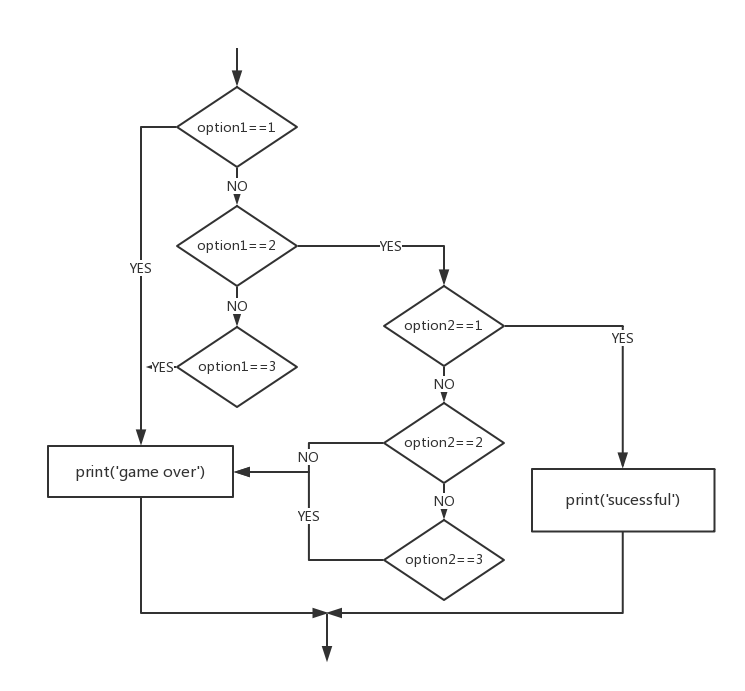

Python Programming
Lecture 2 Conditional Execution, Lists
2.1 Boolean Expressions (布尔表达式)
A boolean expression is an expression that is either true or false.
print(5==5)
print(5==6)
True
False
Note that here we use a double equal sign $==$.
True and False are special values that belong to the class bool, not strings.
print(type(True))
print(type(False))
bool
bool
There are other ways of comparison.
x != y # x is not equal to y
x > y # x is greater than y
x < y # x is less than y
x >= y # x is greater than or equal to y
x <= y # x is less than or equal to y
x is y # x is the same as y
x is not y # x is not the same as y
Logical operators: and, or, not
print(True and True)
print(True and False)
print(False and False)
print(5 > 3 and 3 > 1)
True
False
False
True
print(True or True)
print(True or False)
print(False or False)
print(5 > 3 or 1 > 3)
True
True
False
True
print(not True)
print(not False)
print(not 1>2)
False
True
True
Any nonzero number is interpreted as "true".
print(17 and True)
True
Short-circuit evaluation
- Python evaluates the expression from left to right.
- If there are multiple expressions, Python evaluates them one by one.
- If there is nothing to be gained by evaluating the rest of a logical expression, it stops its evaluation.
x = 6
y = 2
print(x >= 2 and (x/y) > 2)
True
x = 1
y = 0
print(x >= 2 and (x/y) > 2)
False
x = 6
y = 0
print(x >= 2 and (x/y) > 2)
Traceback (most recent call last):
File "<stdin>", line 1, in <module>
ZeroDivisionError: division by zero
- While this may seem like a fine point, the short-circuit behavior leads to a clever technique called the guardian pattern.
x = 1
y = 0
print(x >= 2 and y!= 0 and (x/y) > 2)
False
x = 6
y = 0
print(x >= 2 and y!= 0 and (x/y) > 2)
#y!= 0 acts as a guard.
False
x = 6
y = 0
print(x >= 2 and (x/y) > 2 and y != 0)
Traceback (most recent call last):
File "<stdin>", line 1, in <module>
ZeroDivisionError: division by zero
2.2 Conditional Execution
x=10
if x>0:
print('x is positive')
-
The boolean expression after the if statement is called the condition.
-
We end the if statement with a colon character :
-
If the logical condition is true, then the indented statement gets executed.
- The indent is important!
-
There is no limit on the number of statements, but there must be at least one.
-
If there is no statement, you can use pass statement, which does nothing.
if x < 0:
pass
# need to handle negative values!
Alternative Execution
x=10
if x%2 == 0 :
print('x is even')
else :
print('x is odd')
Chained Conditionals
x=5
y=10
if x < y:
print('x is less than y')
elif x > y:
print('x is greater than y')
else:
print('x and y are equal')
- elif is an abbreviation of “else if.”
- No limit on the number of elif statements. If there is an else clause, it has to be at the end, but there does not have to be one.
- Each condition is checked in order. If the first is false, the next is checked. If one of them is true, then it executes, and the statement ends.
Nested Conditionals
if x == y:
print('x and y are equal')
else:
if x < y:
print('x is less than y')
else:
print('x is greater than y')
- Nested conditionals are difficult to read. In general, it is a good idea to avoid them when you can.
Try and Except
inp = input('Enter Fahrenheit Temperature: ')
fahr = float(inp)
cel = (fahr - 32.0) * 5.0 / 9.0
print(cel)
Enter Fahrenheit Temperature:72
22.22222222222222
Enter Fahrenheit Temperature:fred
Traceback (most recent call last):
File "fahren.py", line 2, in <module>
fahr = float(inp)
ValueError: could not convert string to float: 'fred'
The idea of try and except is that you know that some sequence of instruction(s) may have a problem and you want to add some statements to be executed if an error occurs. These extra statements (the except block) are ignored if there is no error.
inp = input('Enter Fahrenheit Temperature:')
try:
fahr = float(inp)
cel = (fahr - 32.0) * 5.0 / 9.0
print(cel)
except:
print('Please enter a number')
Enter Fahrenheit Temperature:72
22.22222222222222
Enter Fahrenheit Temperature:fred
Please enter a number
2.3 Flow Chart and Examples
A flowchart is a type of diagram that represents an algorithm, workflow or process, showing the steps as boxes of various kinds, and their order by connecting them with arrows. Software: Office Visio, ProcessOn
Example 1: BMI Calculator
print("BMI指数计算器\n")
inp_1 = input('请输入您的体重(kg):\n')
inp_2 = input('请输入您的身高(cm):\n')
try:
weight = float(inp_1)
except:
print('Please enter a number')
try:
height = float(inp_2)
except:
print('Please enter a number')
BMI = weight/(height/100)**2
if BMI<18.5:
print("您的体型偏瘦")
elif BMI<24 and BMI>=18.5:
print("您的体型正常")
elif BMI<28 and BMI>=24:
print("您的体型偏胖")
elif BMI<32 and BMI>=28:
print("您的体型肥胖")
elif BMI>=32:
print("您的体型过于肥胖")
Example 2: Simple Game
- What are the key elements of a game?
- Making a choice and feedback.

Visual programming language

2.4 Lists (1): Index
A list is a sequence of values.
[10, 20, 30, 40]
['apple', 'banana', 'orange']
['spam', 2.0, 5, [10, 20]]
A list that contains no elements is called an empty list; you can create one with empty brackets, [].
>>> cheeses = ['Cheddar', 'Edam', 'Gouda']
>>> numbers = [17, 123]
>>> empty = [] #[] is false
>>> print(cheeses, numbers, empty)
['Cheddar', 'Edam', 'Gouda'] [17, 123] []
- Lists are ordered collections, so you can access any element in a list by telling Python the position, or index, of the item desired.
- Python considers the first item in a list to be at position 0, not position 1.
>>> cheeses = ['Cheddar', 'Edam', 'Gouda']
>>> print(cheeses[0])
Cheddar
- When we ask for a single item from a list, Python returns just that element without square brackets or quotation marks.
- By asking for the item at index -1, Python always returns the last item in the list:
>>> cheeses = ['Cheddar', 'Edam', 'Gouda']
>>> print(cheeses[-1])
Gouda
>>> print(cheeses[-2])
Edam
- You can change the order of items in a list or reassign an item in a list.
- The + operator concatenates lists:
>>> numbers = [17, 123]
>>> numbers[1] = 5
>>> print(numbers)
[17, 5]
>>> a = [1, 2, 3]
>>> b = [4, 5, 6]
>>> c = a + b
>>> print(c)
[1, 2, 3, 4, 5, 6]
>>> [0] * 4
[0, 0, 0, 0]
>>> [1, 2, 3] * 3
[1, 2, 3, 1, 2, 3, 1, 2, 3]
List slices
>>> t = ['a', 'b', 'c', 'd', 'e', 'f']
>>> t[1:3]
['b', 'c']
>>> t[:4]
['a', 'b', 'c', 'd']
>>> t[3:]
['d', 'e', 'f']
- The first slice starts at 1, and ends at 2. The slice does not contain the 3rd element.
>>> t[:]
['a', 'b', 'c', 'd', 'e', 'f']
>>> t = ['a', 'b', 'c', 'd', 'e', 'f']
>>> t[1:3] = ['x', 'y']
>>> print(t)
['a', 'x', 'y', 'd', 'e', 'f']
Why the index starts at 0 instead of 1?
- Slice notation
- If we want to have the first n elements of a list, what shall we do?
- half-open + 0-based: a_list[:n]
- half-open + 1-based: a_list[:n+1]
- all-closed + 0-based: a_list[:n-1]
- all-closed + 1-based: a_list[:n]
- all-closed + 1-based seem to be ok...
- but if we want to have n elements which starts from i...
- all-closed + 1-based: a_list[i:i+n-1]
- half-open + 0-based: a_list[i:i+n]
- Moreover, a_list[:i]+a_list[i:j]+a_list[j:]
2.5 Lists (2): Adding and Deleting
-
append adds a new element to the end of a list:
-
extend takes a list as an argument and appends all of the elements:
-
insert adds a new element at any position in your list
>>> t = ['a', 'b', 'c']
>>> t.append('d')
>>> print(t)
['a', 'b', 'c', 'd']
>>> t1 = ['a', 'b', 'c']
>>> t2 = ['d', 'e']
>>> t1.extend(t2)
>>> print(t1)
['a', 'b', 'c', 'd', 'e']
>>> t = ['a', 'b', 'c']
>>> t.insert(1, 'd')
>>> print(t)
['a', 'd', 'b', 'c']
- What is Method? (方法)
- Is it the same with function? (函数)
-
The return value of the above three methods is None. What is None in Python?
-
The None keyword is used to define a null value, or no value at all. None is not the same as 0, False, or an empty string. None is a datatype of its own (NoneType) and only None can be None.
>>> t = ['a', 'b', 'c']
>>> x = t.insert(1, 'd')
>>> print(t)
['a', 'd', 'b', 'c']
>>> print(x)
None
Deleting elements
-
There are several ways to delete elements from a list. If you know the index of the element you want, you can use pop
>>> t = ['a', 'b', 'c']
>>> x = t.pop(1)
>>> print(t)
['a', 'c']
>>> print(x)
b
-
pop modifies the list and returns the element that was removed. If you don’t provide an index, it deletes and returns the last element.
>>> t = ['a', 'b', 'c']
>>> x = t.pop()
>>> print(t)
['a', 'b']
>>> print(x)
c
-
If you don't need the removed value, you can use the del operator
>>> t = ['a', 'b', 'c']
>>> del t[1]
>>> print(t)
['a', 'c']
>>> t = ['a', 'b', 'c', 'd', 'e', 'f']
>>> del t[1:5]
>>> print(t)
['a', 'f']
-
If you know the element you want to remove (but not the index), you can use remove
>>> t = ['a', 'b', 'c']
>>> t.remove('b')
>>> print(t)
['a', 'c']
-
The return value from remove is None. But, you can assign the element which you want to remove to a variable so that you can use it next time.
-
There is a possibility that the value appears more than once in the list, but the remove() method deletes only the first occurrence.
- Sometimes you not only want to modify the list but also want to save the original one. You can create a copy.
>>> t1 = ['a', 'b', 'c']
>>> t2 = t1[:]
>>> t1.remove('b')
>>> print(t1)
['a', 'c']
>>> print(t2)
['a', 'b', 'c']
2.6 Lists (3): Organizing a list
-
sort arranges the elements of the list from low to high:
-
Most list methods modify the list and return None.
-
By .sort(), the order of the list is permanently changed.
>>> t = ['d', 'c', 'e', 'b', 'a']
>>> t.sort()
>>> print(t)
['a', 'b', 'c', 'd', 'e']
>>> t = ['d', 'c', 'e', 'b', 'a']
>>> t.sort(reverse=True)
>>> print(t)
['e', 'd', 'c', 'b', 'a']
-
To maintain the original order of a list but present it in a sorted order, you can use the sorted() function.
>>> t = ['d', 'c', 'e', 'b', 'a']
>>> print(sorted(t))
['a', 'b', 'c', 'd', 'e']
>>> print(t)
['d', 'c', 'e', 'b', 'a']
>>> t = ['d', 'c', 'e', 'b', 'a']
>>> t=sorted(t)
>>> print(t)
['a', 'b', 'c', 'd', 'e']
- Method and function?
-
To reverse the original order of a list, you can use the reverse() method.
-
The reverse() method changes the order of a list permanently, but you can revert to the original order anytime by applying reverse() to the same list a second time.
-
You can quickly find the length of a list by using the len() function.
>>> t = ['d', 'c', 'e', 'b', 'a']
>>> t.reverse()
>>> print(t)
['a', 'b', 'e', 'c', 'd']
>>> s = ['python', 'java', ['asp', 'php'], 'scheme']
>>> len(s)
4
>>> L = []
>>> len(L)
0
>>> s = [3, 8, 10, 7]
>>> sum(s)
28
>>> min(s)
3
>>> max(s)
10
>>> x = ['banana', 'jack', 'jessica']
>>> min(x)
banana
>>> max(x)
jessica
>>> sum(x)
TypeError: unsupported operand type(s)
for +: 'int' and 'str'
Lists: Summary
-
The element can be number, string, list, and empty [].
-
Features: Ordered, Mutable, Repeatable
-
The indices start at 0. Index -1 means the last item.
-
The item can be changed by reassign a new item. Two lists can be added together. list slice :
-
.append(), .extend(), .insert()
.pop(), del, .remove()
.sort(), sorted(), .reverse(), len(), sum(), max(), min()
-
We will talk more about lists at another time.
Summary
- Boolean Expressions
- Conditional Execution, Flow Chart, Examples
- Lists
- Reading: Python for every body Chapter 3, 8.1-8.7